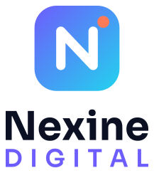
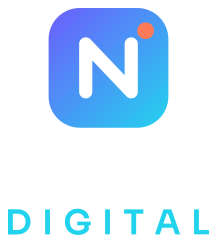
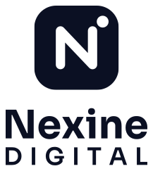
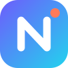

১. প্রধান ব্র্যান্ড কালার
এই চারটা কালারই Nexine Digital-এর মূল পরিচয়। ভায়োলেট (সৃজনশীলতা) আর সায়ান (টেকনোলজি) মিলে সিগনেচার গ্রেডিয়েন্ট, আর কোরাল শুধু মূল বাটন বা হাইলাইটে — যেন চোখে পড়ে কিন্তু চোখে না লাগে। কালার কার্ডে ক্লিক করলে HEX কোড কপি হবে।
Primary
Secondary
Accent
Base
২. সাপোর্টিং / নিউট্রাল কালার
৩. কালার ব্যবহারের অনুপাত (60-30-10)
একটা ডিজাইনে কতটুকু কোন রঙ — এই নিয়ম মানলে কখনো চোখে ইরিটেশন হবে না।
60% নিউট্রাল (Cloud/White বা Navy)
30% Violet / Cyan
10% Coral
৪. সিগনেচার গ্রেডিয়েন্ট
Primary Gradient · #6D5DFC → #22D3EE (135°)
Dark Gradient · #0B1023 → #6D5DFC
Creative Gradient · #6D5DFC → #FF7A59 (রিল/সোশ্যাল)
৫. লোগো ব্যবহার
লোগোর ৪টা ধরন × ৪টা কালার ভার্সন। ফাইলগুলো brand/logos/ ফোল্ডারে (SVG + ট্রান্সপারেন্ট PNG)।
 Horizontal · color
Horizontal · color Horizontal · on-dark
Horizontal · on-darkHorizontal · white

Stacked · color
Stacked · on-dark
Stacked · navyWordmark · color
Wordmark · on-dark

Icon৬. ফন্ট (টাইপোগ্রাফি)
Heading — Sora (Bold 700 / SemiBold 600)
We build digital experiences
Body — Inter (Regular 400 / Medium 500)
Clean, readable text for websites, proposals and captions.
বাংলা — Hind Siliguri (Regular / SemiBold)
আপনার ব্র্যান্ডকে আমরা ডিজিটালভাবে বড় করি।
৭. কোথায় কোন কালার
✅ যা করবেন
- গ্রাফিক ডিজাইন: সাদা/Cloud বেস + Violet হেডিং + Coral “Call to Action”।
- রিল ও মোশন গ্রাফিক্স: Navy বেস, Violet→Cyan গ্রেডিয়েন্ট ট্রানজিশন, Coral দিয়ে টেক্সট হাইলাইট।
- ভিডিও থাম্বনেইল: Navy/Dark Gradient ব্যাকগ্রাউন্ড, সাদা বড় লেখা, এক শব্দে Coral।
- ওয়েবসাইট/সফটওয়্যার UI: Violet প্রাইমারি বাটন/লিংক, Cyan স্ট্যাটাস/হাইলাইট।
- লোগোর চারপাশে পর্যাপ্ত ফাঁকা জায়গা রাখবেন।
❌ যা করবেন না
- Coral দিয়ে বড় ব্যাকগ্রাউন্ড ভরাবেন না — চোখে লাগবে।
- খাঁটি কালো (#000) ব্যবহার না করে Midnight Navy ব্যবহার করুন।
- এই প্যালেটের বাইরের উজ্জ্বল রঙ (লাল, সবুজ, হলুদ) মিশাবেন না।
- Cyan-এর উপর সাদা ছোট লেখা দেবেন না — পড়া কঠিন হয়; Navy লেখা দিন।
- লোগো টেনে লম্বা/চ্যাপ্টা বা রঙ পাল্টাবেন না।